Mediante este proceso se puede iniciar un trámite de compra para abastecer las necesidades incluidas en las solicitudes de materiales realizadas por los usuarios, entre este proceso se incluye:
la selección de las líneas de cada solicitud que se desea incluir en el proceso,
la selección de los proveedores que se desean que participen mediante cotizaciones,
la publicación del proceso,
la importación de las cotizaciones de los proveedores
y la cotización manual, de ser necesario.
La asignación de solicitudes de compra que realiza el sistema a los compradores se lleva a cabo por medio de un orden de asignación. Dicho orden de asignación de trabajo a los compradores es el siguiente:
1. Centros funcionales asociados.
2. Especialización de tipos de solicitud.
3. Cargas de trabajo (cantidad de solicitudes pendientes de surtir).
4. Es o no el comprador por defecto del sistema.
Con base en los criterios anteriores la aplicación decide a quien debe asignarse una solicitud de compra; en caso de no encontrar ningún comprador que cumpla los criterios anteriores, la solicitud de compra es asignada al comprador definido como “default”.
El comprador puede seleccionar varias solicitudes o líneas de diferentes solicitudes para realizar el proceso de compra, de esta forma se indicará las solicitudes o trabajo pendiente para cada comprador que desea tratar de abastecer, mediante el trámite o proceso de compra en análisis.
La selección de la lista de solicitudes de materiales que se pueden incluir en un proceso de compra son solamente aquellas asignadas al comprador, que no han sido completamente surtidas y que se encuentran autorizadas; el mantenimiento utilizado para este fin es el siguiente:
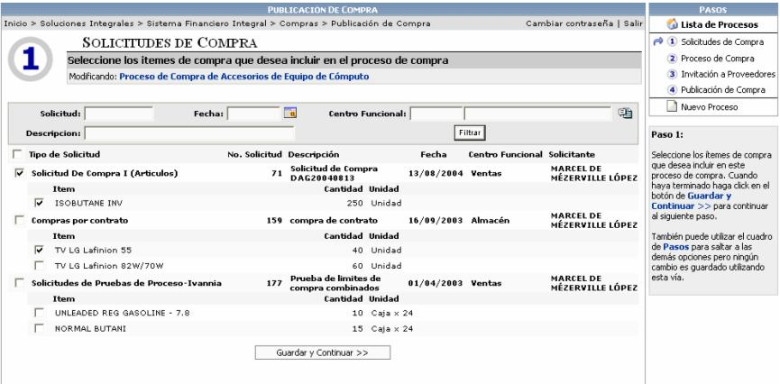
Una vez seleccionados los ítems de compra se debe de presionar el botón
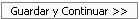
para continuar con el paso 2, Proceso de Compra.
El Proceso de Compra requiere el llenado de un formulario donde el comprador especifica las condiciones o características de la compra a realizar, como lo son: la fecha de publicación de la orden, la fecha y hora máxima para que los proveedores coticen la orden, la forma de pago, si aplica o no algún termino internacional de comercio y el grupo de criterios a tomar en cuenta en este proceso.
El comprador podrá modificar los pesos de cada criterio, siempre y cuando recuerde que la suma de los mismos debe ser igual a 100.
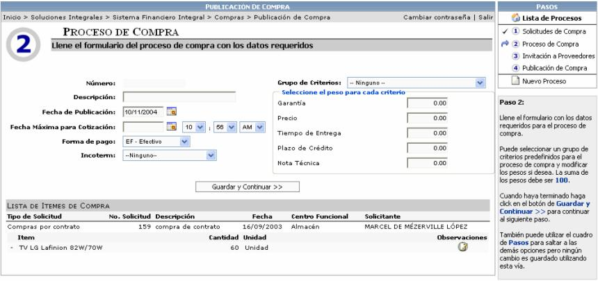
Algunas consideraciones importantes referentes a la funcionalidad de este mantenimiento de la pantalla anterior son las siguientes:
 Se puede agregar información adicional por línea de detalle
de la compra presionando este icono.
Se puede agregar información adicional por línea de detalle
de la compra presionando este icono.
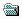
Este icono sirve para adjuntar documentos a la solicitud por línea de detalle, al presionarlo se presenta la siguiente pantalla, donde se agrega el archivo deseado presionado el botón

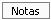
Este botón aparecerá al lado izquierdo del botón Guardar y Continuar >>, una vez que se haya guardado la información de la pantalla del paso #2 Proceso de Compra. Dicho botón sirve para agregar anotaciones del proceso de publicación de la compra. La siguiente pantalla es la que se presenta cuando se presiona este botón.

Una vez llenado el formulario del paso #2 Proceso de Compra, se debe de presionar el botón para continuar con el paso 3, Invitación a Proveedores.
El siguiente paso, Invitación a Proveedores consiste en seleccionar de una lista, a los proveedores que se quieren que participen en la cotización de dicha orden de compra.
Se puede invitar a todos los proveedores de la lista o invitar a los proveedores que se seleccionen de la lista. Si la solicitud de compra tiene asociados artículos con Número de Parte, automáticamente el sistema invitará a todos los proveedores que tenga asociado ese artículo (esta asociación se realiza en el módulo de Inventario en la opción Mantenimiento de Artículos en la sección Números de Parte). El número de parte es el código interno que maneja el proveedor para un artículo en particular y el cual sirve para identificar dicho articulo, en las cotizaciones que manda a sus clientes.

Si el artículo no tiene asociado un número de parte, pero se quiere que se invite automáticamente a proveedores en la publicación, se puede realizar una clasificación de proveedores en el módulo Administración del Sistema en la opción Clasificación de Socios de Negocios.
El sistema invitará automáticamente a los proveedores que tengan asociada la misma clasificación que tiene asociada el artículo. A un mismo proveedor se le pueden asignar varias clasificaciones:
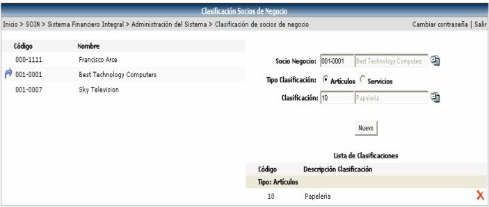

Una vez seleccionados los proveedores, se debe de presionar el botón para continuar con el paso 4, Publicación de Compra.
En este cuarto paso se verifica la información, y si se tiene que realizar alguna corrección, se utiliza el cuadro de pasos para ir al paso deseado y corregir.
La impresión física de la solicitud de cotización para los proveedores se puede realizar de dos maneras diferentes:
1. Una manera es presionando el botón  Al presionar este botón el sistema creará una solicitud de
cotización con las líneas de la solicitud de compra de los artículos que
tengan asociado a ese proveedor y además llenará automáticamente el nombre
del proveedor y el número de cédula jurídica del mismo. Se puede imprimir
en formato local o en formato de importación.
Al presionar este botón el sistema creará una solicitud de
cotización con las líneas de la solicitud de compra de los artículos que
tengan asociado a ese proveedor y además llenará automáticamente el nombre
del proveedor y el número de cédula jurídica del mismo. Se puede imprimir
en formato local o en formato de importación.

2. Otra manera es presionando el botón
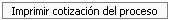
. Al presionar este botón el sistema creará una solicitud de cotización con TODAS las líneas de la solicitud de compra, indistintamente si tienen asociado un proveedor o no. Además deja en blanco el nombre y cédula jurídica del proveedor, para que el usuario la mande a los proveedores que el desee. Se puede imprimir en formato local o en formato de importación.
Si la verificación esta bien se debe de
presionar el botón de  , para que el sistema le envíe un
correo electrónico al(a los) proveedor(es) invitándolo(s) a participar
en la cotización, y le(s) aparezca la solicitud en la lista de procesos
de compra publicados; este proceso adicionalmente envía la solicitud a
una lista de Evaluación de Cotizaciones, que es el siguiente paso en el
proceso de compra a seguir después de la publicación. (Esto se explicara
más adelante).
, para que el sistema le envíe un
correo electrónico al(a los) proveedor(es) invitándolo(s) a participar
en la cotización, y le(s) aparezca la solicitud en la lista de procesos
de compra publicados; este proceso adicionalmente envía la solicitud a
una lista de Evaluación de Cotizaciones, que es el siguiente paso en el
proceso de compra a seguir después de la publicación. (Esto se explicara
más adelante).
Hasta este paso del proceso de compra es importante mencionar que lo que se ha hecho por parte del comprador es seleccionar la lista de solicitudes de compras que desea abastecer, se han indicado las condiciones generales deseadas para la compra e indicado al sistema cuales de todos los proveedores de la empresa serán los invitados a participar a cotizar y por lo tanto se les brindará la posibilidad de generar una orden de compra abasteciendo las solicitudes incluidas en el proceso creado anteriormente.
Una vez que al proveedor le llega la solicitud de cotización automáticamente, él procede a cotizar los artículos o servicios solicitados, cuantas veces desee y al final aplica las cotizaciones que crea necesarias; mediante este proceso de aplicación le estará indicando al sistema que las cotizaciones son válidas y están disponibles para ser utilizadas al momento de evaluar las compras que se desean realizar. Todas las cotizaciones que no han sido aplicadas no se consideran como parte de la información disponible para ser utilizada al momento de evaluar una compra.
Las cotizaciones de los proveedores se pueden recibir básicamente por dos opciones, la primera de estas es que el proveedor ingrese la información de sus cotizaciones directamente a la aplicación o también se puede dar el caso de que un proveedor no tenga correo o no tenga acceso el sitio donde se le publique la solicitud de cotización; lo que procede en tal caso es que el comprador imprima los datos del proceso de compra y se los envíe por algún medio (fax, apartado, etc.).
Es importante mencionar que siempre debe
publicar la compra mediante el botón  para dar el estado
de OK a la publicación y por ende
poder recibir cotizaciones por parte de los proveedores. Dichas cotizaciones
tendrán que ser ingresadas manualmente por el usuario al sistema en caso
de no tener acceso desde el sitio externo.
para dar el estado
de OK a la publicación y por ende
poder recibir cotizaciones por parte de los proveedores. Dichas cotizaciones
tendrán que ser ingresadas manualmente por el usuario al sistema en caso
de no tener acceso desde el sitio externo.
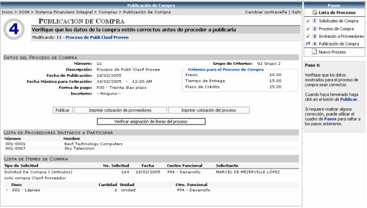
El botón
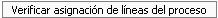
muestra una lista de los proveedores que no han sido asignados a las líneas de compra.
Una vez que se publicó la solicitud de compra, el comprador espera un tiempo prudencial o hasta la fecha definida como límite para recibir cotizaciones por parte de los proveedores para que estos contesten con una cotización, esa solicitud.
Pasado ese tiempo (horas, días, semanas, etc.), *Paso 1. el comprador debe de presionar el link que se encuentra en el cuadro de pasos.
Se le desplegará una pantalla con todas las solicitudes que han trabajado, ya sea que se hayan llegado a Publicar o solamente se haya completado parcialmente cada uno de los pasos.
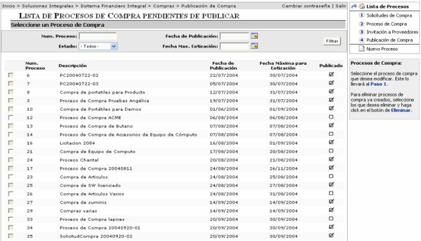
Si una solicitud ya fue publicada (check Publicado, está activado en la pantalla anterior), se procede a importar la (s) cotización (es) que el proveedor aplicó para dicha solicitud. *Paso 2. Esto se realiza presionando el mouse sobre la solicitud que se le desea importar las cotizaciones:
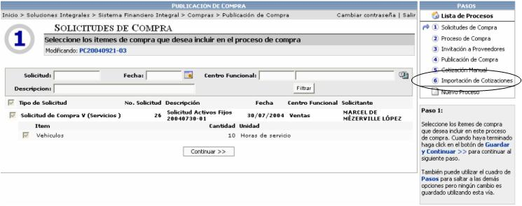
En el cuadro de pasos aparece como sexto paso , *Paso 3. hacer un click encima de ese paso para proceder a la importación:
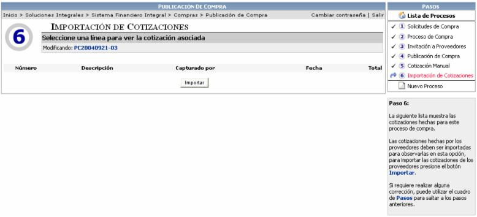
NOTA: si se quiere verificar la lista de cotizaciones creadas por el proveedor, en cualquier momento, se repiten los pasos del *1 al 3*. La información o la lista de registros que se muestra en la pantalla anterior, va a corresponder a dichas cotizaciones. Cabe aclarar que también en esta opción se pueden verificar las cotizaciones que han sido incluidas manualmente por el usuario.
Luego se debe de presionar el botón
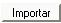
para poder traer las cotizaciones de los proveedores, lo cual las habilita como cotizaciones disponibles dentro del ambiente de trabajo del sistema de compras y de evaluación de cotizaciones en general.

Pero si lo que se quiere es ingresar al sistema manualmente las cotizaciones, se debe de seleccionar el paso y presionar el botón
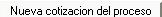
para incluir las cotizaciones de todas las líneas de la solicitud de compra o el botón


Si se presionó el botón  , se desplegarán todas las líneas de la solicitud de compra,
pero al seleccionar el proveedor, la pantalla se actualizara únicamente
con las líneas que le pertenezcan a ese proveedor
, se desplegarán todas las líneas de la solicitud de compra,
pero al seleccionar el proveedor, la pantalla se actualizara únicamente
con las líneas que le pertenezcan a ese proveedor
Si las líneas de la cotización tienen
un número de parte asociado y en la cotización el proveedor cambió ese
número de parte, el sistema le permite actualizar ese número de parte
en el catálogo de artículos, desde esta pantalla, solamente digitando
el nuevo número de parte en el campo  y
activando el check . Luego se termina de llenar la información
correspondiente y posteriormente es necesario presionar el botón
y
activando el check . Luego se termina de llenar la información
correspondiente y posteriormente es necesario presionar el botón  para almacenar la información.
para almacenar la información.
Al APLICAR la cotización, el sistema creará un nuevo registro en la sección Números de Parte en el mantenimiento del artículo con el nuevo rango de fechas de vigencia, y el nuevo número de parte para ese proveedor. Por ejemplo, se tiene el siguiente registro de número de parte para un artículo:
|
Número Parte |
Socio de Negocio |
Marca |
Val. Desde |
Val. Hasta |
|
R100 |
001-0002- LG Electronics |
LG |
01/01/2004 |
31/12/2005 |
Cuando se aplica la cotización con el nuevo número de parte para ese artículo, el sistema automáticamente actualiza el mantenimiento de número de parte de la siguiente manera:

Otro caso es cuando se invitó a un proveedor
no por número de parte sino por clasificación. Si al recibir la cotización
de ese proveedor, él incluye un número de parte, el usuario puede utilizar
los campos  y , para que el sistema le cree automáticamente
un registro en la sección números de parte en el mantenimiento del artículo
en el módulo de inventarios, evitándole así al usuario, el tener que ir
a crear dicho número de parte a Inventarios. La actualización del número
de parte se realiza al APLICAR
la cotización.
y , para que el sistema le cree automáticamente
un registro en la sección números de parte en el mantenimiento del artículo
en el módulo de inventarios, evitándole así al usuario, el tener que ir
a crear dicho número de parte a Inventarios. La actualización del número
de parte se realiza al APLICAR
la cotización.
Por último, para que la cotización quede
en firme y se importe automáticamente, se debe de presionar el botón .
.
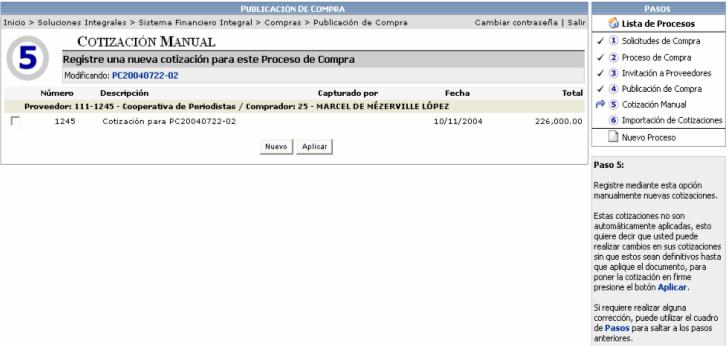
Si por algún motivo, una vez realizado el Proceso de Publicación, se tienen cotizaciones de un proveedor que no se incluyo en el proceso, las mismas se tienen que incluir manualmente en el sistema (en el caso de que el proveedor no tenga acceso a la aplicación), para esto se debe de realizar de nuevo el proceso de publicación para ese nuevo proveedor.
Cuando se este realizando el proceso
nuevamente en el punto #  , aparecerá el botón de
, aparecerá el botón de  , el cual se debe de presionar para que el sistema automáticamente
envíe el correo al proveedor con la invitación de la solicitud de compra
y para que el usuario pueda digitar la cotización manualmente y luego
aplicarla para que quede en firme (en el caso de que el proveedor no tenga
acceso a la aplicación para importar las cotizaciones automáticamente).
, el cual se debe de presionar para que el sistema automáticamente
envíe el correo al proveedor con la invitación de la solicitud de compra
y para que el usuario pueda digitar la cotización manualmente y luego
aplicarla para que quede en firme (en el caso de que el proveedor no tenga
acceso a la aplicación para importar las cotizaciones automáticamente).